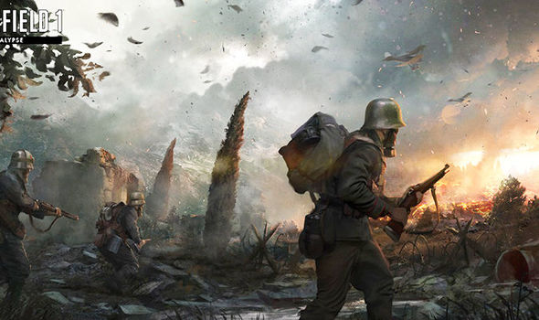

Why violence in video games isn’t really a problem
What is the immersive fallacy?
How can video games be confused for reality when its players view them as escapism and freedom from reality? In their book Rules of Play, scholars Katie Salen Tekinbaş and Eric Zimmerman argue that there are significant flaws in our understanding of video games and what exactly constitutes immersion.
The idea video game players can reach a state where they forget they are playing a game is a common misconception. Salen and Zimmerman call this the “immersive fallacy.” That is, the idea that players believe their gaming “reality is so complete…that the player truly believes that he or she is part of an imaginary world” is false.
Instead Salen and Zimmerman say players are “well-aware of the artificiality of the play situation.” In fact, this artificiality is one of the things that makes games so entertaining.
Let’s take an example.